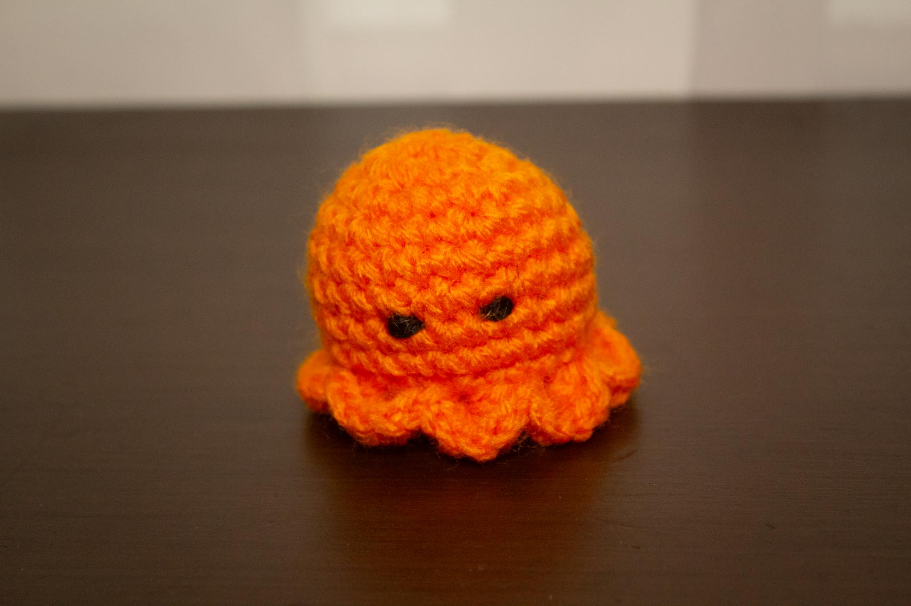

Gallery

Red Octopus
Blue Octopus

Orange Octopus

I’m not sure why I decided to make an octopus as my very first amigurumi creation, but I followed along with CreatOsaur’s YouTube video to make it happen! Since this pattern was my first ever amigurumi creation, I was very limited on my materials. I embroidered the eyes on because I had no safety eyes, and I used excess pillow filling to stuff the octopuses. But I was so proud of my octopus army that was created! With each octopus that I made, I was getting more practice with the art of amigurumi, which would make my future creations easier to follow along with. Though I haven’t tried it, I’m sure this pattern could have long tentacles on it instead of the shell shaped ones. But I think the shells are a good place to start!